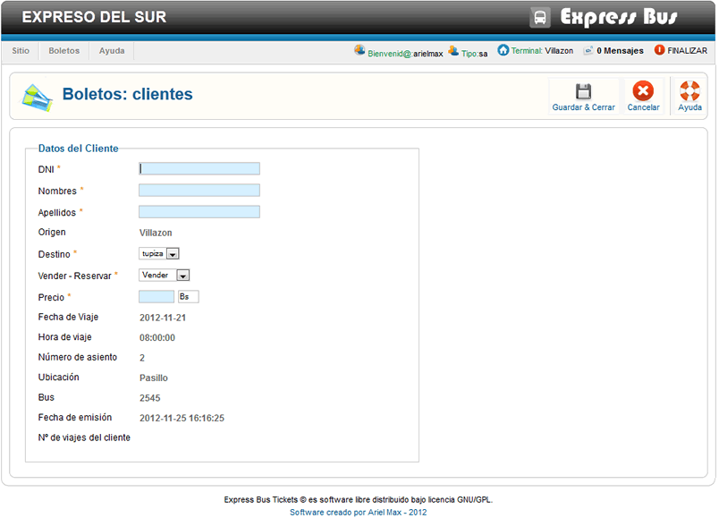

Ayuda Venta de Boletos
En este formulario debemos llenar la información personal del pasajero, todos los campos marcados con * son obligatorios, si el clientes ya realizo un viaje con anterioridad bastara con llenar solo su DNI y el sistema llenara automaticamente sus datos, a continuación esplicamos las principales funciones de venta de boletos:
Vender - Reservar* utilizando la lista despleglable podemos seleccionar entre vender y reservar.
Si colocamos reservar no se imprimira su boleto ya que es una reserva, para concretarse la venta se devera confirmar la reserva, en caso de colocar la opción vender se imprimira su boleto y la venta sera registrada en el sistema antes de proceder con una venta es necesario cobrar el efectivo al cliente.
Si no deseamos efectuar ninguna acción precionamos en el boton cancelar.
PRECAUCION: si decide cancelar la operación no cierre la ventana del formulario, ni actualize la página, utilize el boton cancelar, ya que si se cierra el estado del asiento estara en procesando (color gris), evitando que otro usuario del sistema pueda vender dicho asiento.
Si esto se llegara a producir se debe de restablecer el asiento, esto en la barra de configuración de Bus.
Una Vez llenado todo el formulario procedemos a guardar, presionamos el botón Guardar & Cerrar y por ultimo imprime el boleto del Pasajero, una vez impreso el boleto cerramos la ventana de impresión.